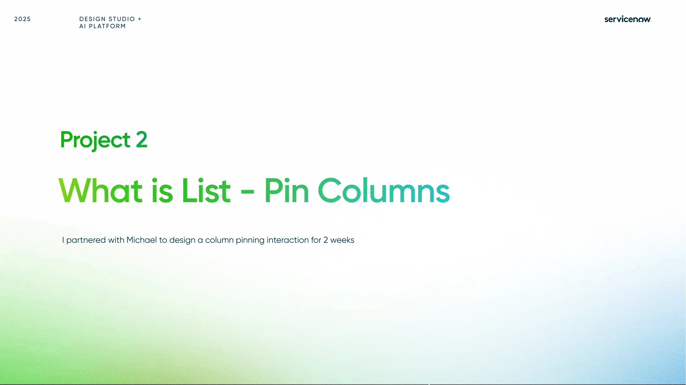
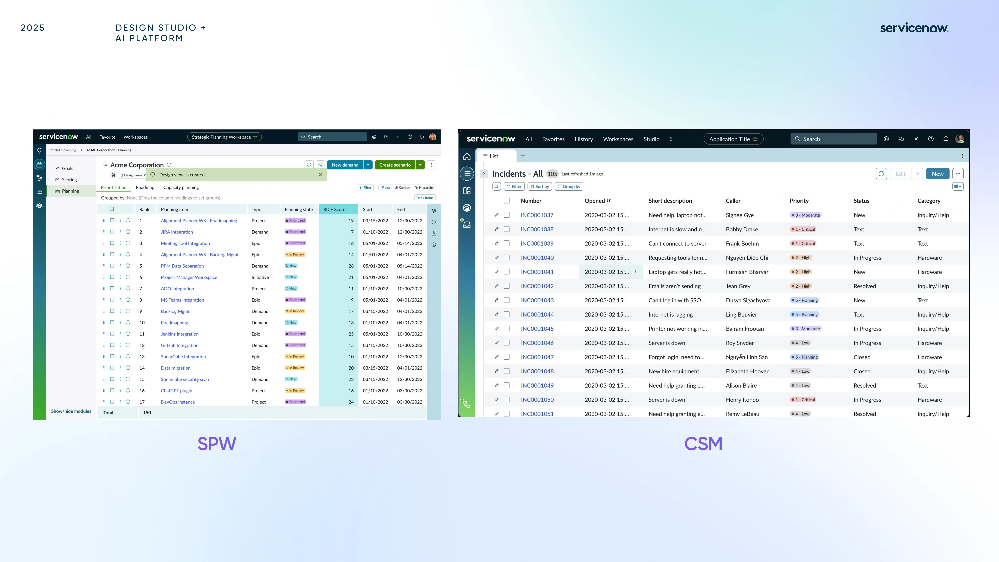
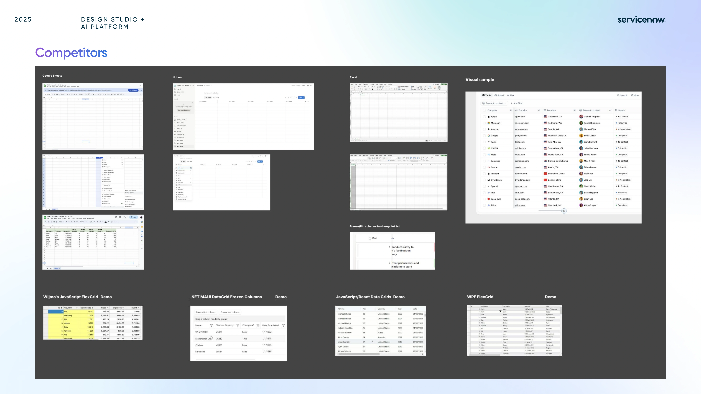
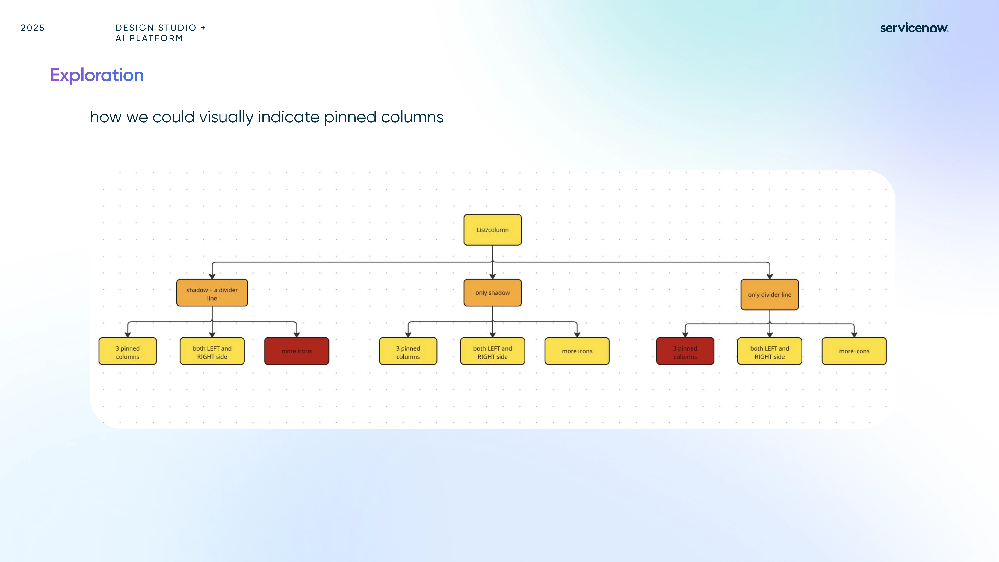
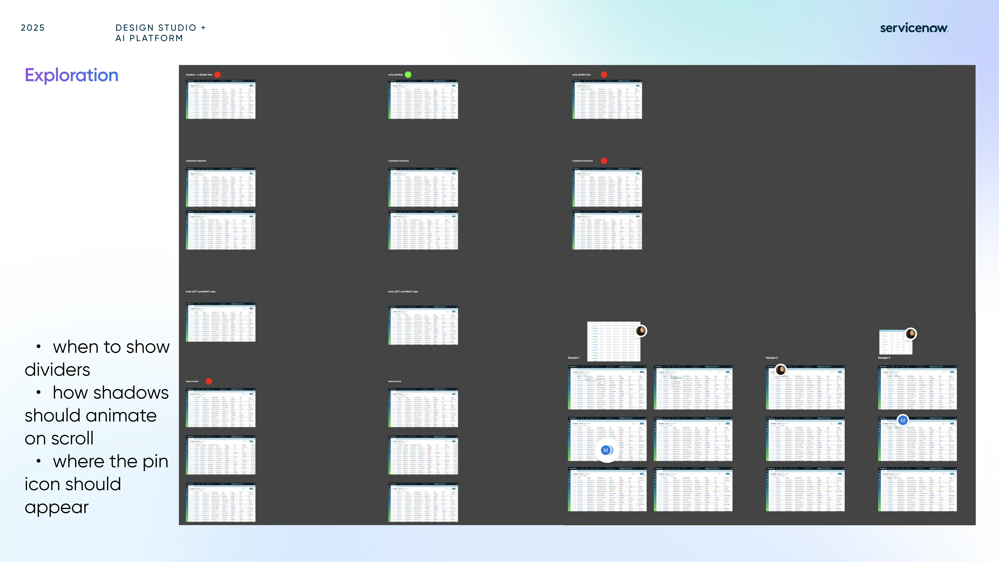
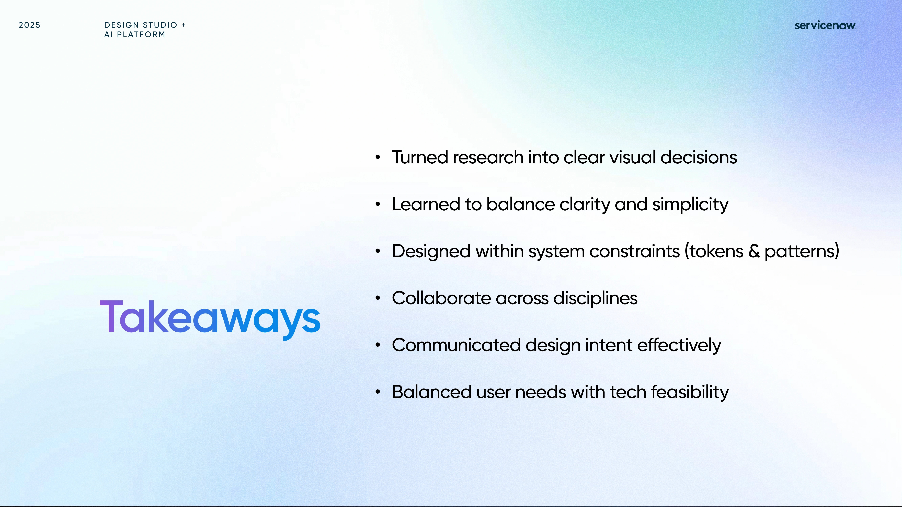

Column Pinning Exploration
A focused ServiceNow exploration on how pinned columns can feel clearer, more predictable, and more useful inside dense list workflows.
I partnered with Michael to make column pinning clearer and more predictable in dense ServiceNow list views.
DISCUSS THIS PROJECT ↗


Research & Exploration
The work moved from competitor patterns into a focused study of dividers, shadows, scroll behavior, and pin placement across dense ServiceNow lists.



Directions
No Icon reduces noise.
Restraint builds confidence.
Final Design
The final design uses a pin icon and subtle dividers to mark pinned columns. When users scroll, a shadow appears to reinforce the column’s fixed position — keeping things clear but minimal.
